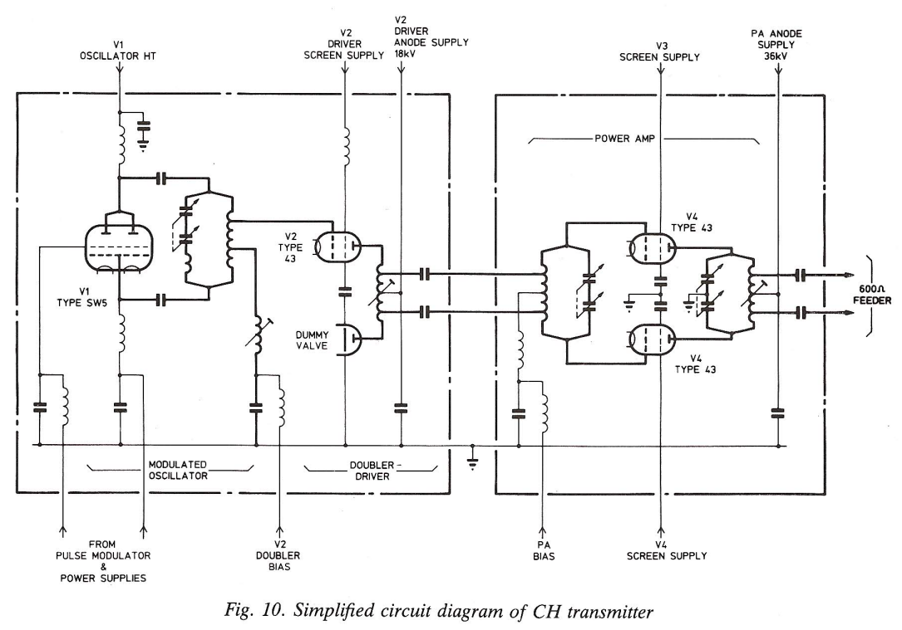
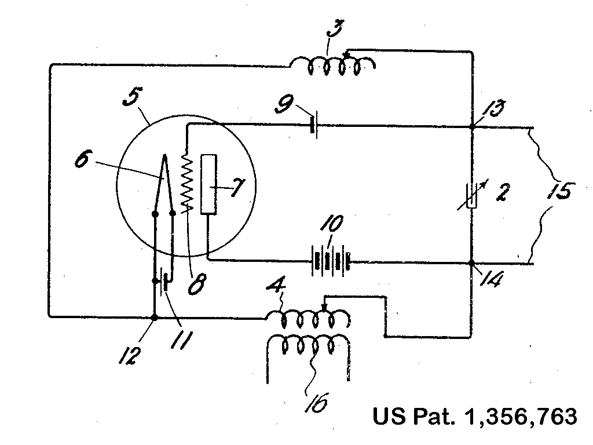
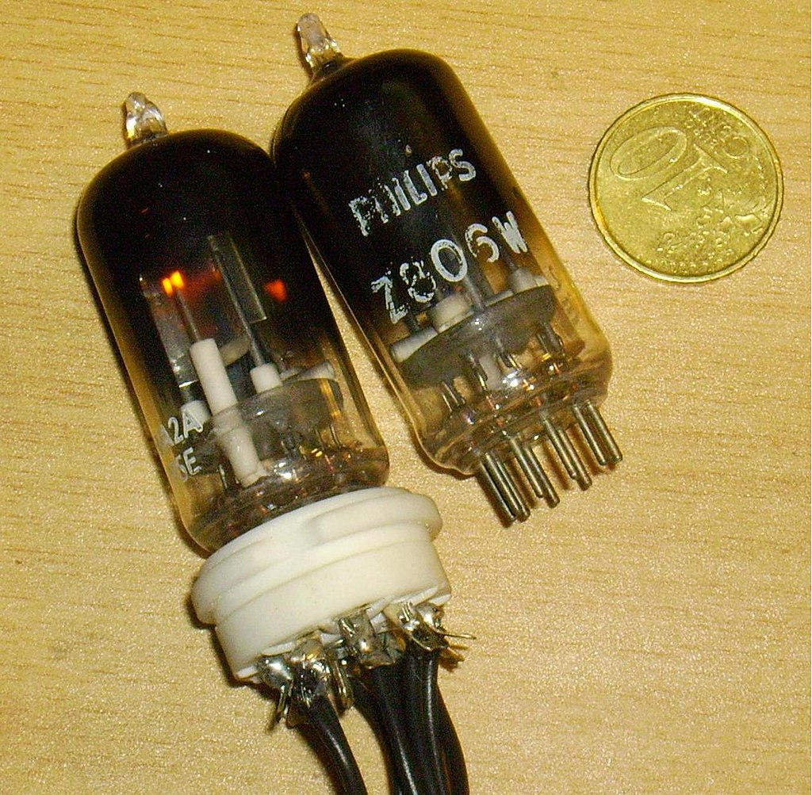
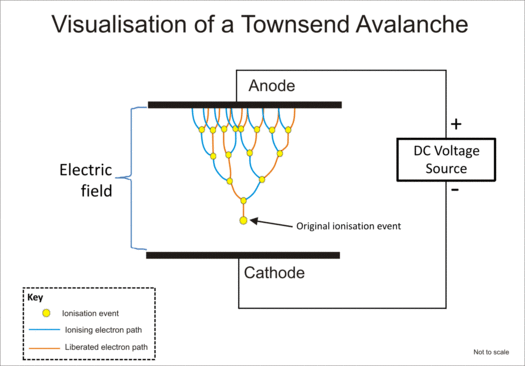
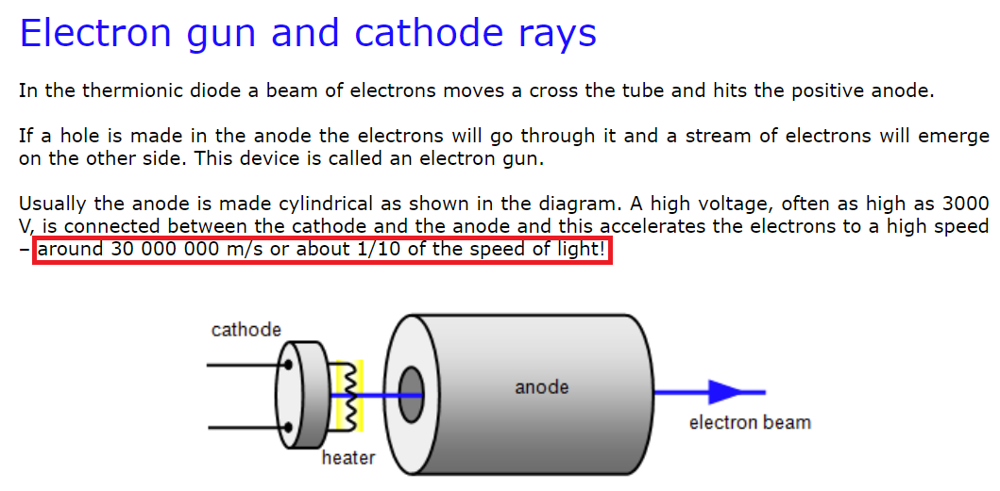
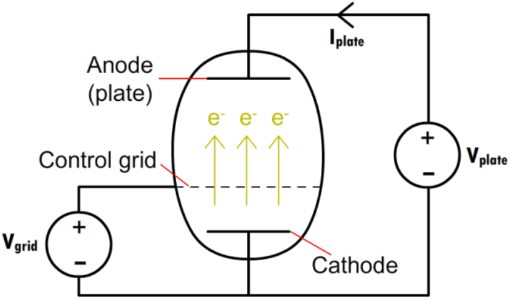
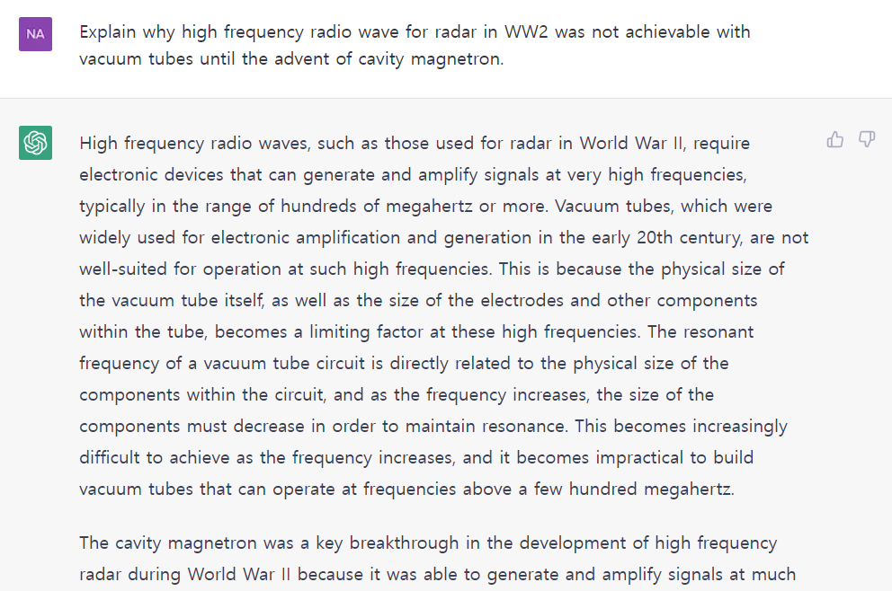

레이더 개발 이야기 (15) - 진공관의 한계와 ChatGPT
게시: 2023-01-05T06:30:12+09:00
<Chain Home 레이더의 회로도> Cavity magnetron이 없던 시절인 1939년, 이미 영국은 훌륭한 지대공 레이더인 Chain Home 시스템을 운용. 이 체인홈 레이더에서는 20 ~ 55 MHz의 전파를 사용. 이렇게 비교적 낮은 주파수, 즉 긴 파장의 전파를 썼기 때문에 radar beam의 폭은 150도 정도로 넓게 퍼질 수 밖에 없었지만, 그래도 바다 위에 나타나는 독일 폭격기를 잡아내는 데는 요긴한 역할을 수행. 이 체인홈에서도 인덕터와 커패시터를 결합한 LC 공명회로를 이용하여 주파수를 만들었을까? 맞음. 1915년 미국 엔지니어 Ralph Hartley가 발명한, 2개의 직렬 인덕터와 1개의 커패시터를 병렬로 연결한 Hartley oscillator를 약간 변형하여 사용함. 아래 그림1이 체인홈의 단순화된 회로.

하틀리 공명회로는 기존 LC 공명회로에 진공관(원래 특허에서는 triode)을 이용하여 신호를 증폭시키고 2개의 직렬 인덕터, 좀더 다르게 말하면 코일 중간에서 전선을 딴 (tapped coil) 위치를 조절하여 튜닝이 가능한 것. 아래 그림2가 1915년 하틀리가 특허출원할 때 제출했던 회로도.

여기서 만들어진 신호를 강력하게 증폭하기 위해서는 진공관이 아니라 일부러 수은 증기를 약간 넣은 thyratron을 사용 (아래 사진3은 엘리베이터에서 사용된 싸이러트론).

싸이러트론은 진공관의 기본 원리가 음극(cathode)에서 양극(anode)으로 진공을 통해 전자가 날아가는 것을 중간의 그리드(grid)에 전기 신호를 주어 제어하는 것인데 비해, 싸이러트론은 진공이 아니라 제온이나 네온, 수은 등의 증기를 일부러 넣어, 양극에서 음극으로 전자가 날아갈 때 이온화된 증기에서 더 많은 양의 전자가 산사태처럼 흐르게 해주는, 즉 Townsend 방전을 이용한 장치 (그림4가 타운젠드 방전 효과를 설명하는 그림).

물론 실제로는 체인홈 레이더는 훨씬 더 복잡하지만 그냥 넘어감. (실은 내가 이해를 잘못함.) 그런데 핵심적인 문제는 왜 진공관으로는 더 높은 주파수, 더 짧은 파장의 신호를 만들지 못했을까? <진공관에서는 왜 고주파수를 못 만들었나?> 나중에 나오겠지만 캐버티 마그네트론으로는 어떤 원리로 더 짧은 파장의 전파를 만들었는지에 대해서는 많은 설명이 있음. 그러나 의외로 진공관의 한계에 대해서는 구글 검색에서 설명 자료를 보기가 힘듬. 가장 핵심적인 설명은 진공관의 cathode에서 anode로 전자가 날아갈 때 걸리는 시간, 즉 transit time이 결정적인 제약 요건이 된다는 것 정도. 전자가 날아가는 속도가 빛의 속도이던가...? 라고 헷갈릴 수 있으나 당연히 빛의 속도에 크게 못 미침. 진공관은 아니지만 비슷한 원리인 CRT (브라운관) 속에서 전압이 3천 볼트일 경우 전자의 속도는 광속의 약 1/10 정도 된다고.

진공관 cathode에서 anode로 전자가 날아갈 때 걸리는 속도는 전기장의 세기에 비례하고, 당연히 cathode와 anode 사이의 거리에 반비례. 그러니 주파수를 높이려면 일단 진공관의 물리적 크기는 작게, 그리고 가해지는 전기장은 크게 해야 함. 그러나 WW2 당시의 제조 기술력으로는 그것이 어려웠고, 당시 기술의 한계로는 대략 55 MHz가 최대치였음. 지금은 진공관에서도 GHz의 주파수 잘 만들어내고, 일부 분야에서 실제로 사용된다고.

<ChatGPT와 밀덕의 종말> 위에 내가 적어놓은 간단한 이해를 얻기 위해 난 구글링을 하며 어려운 문서를 읽다가 포기한 뒤 좀더 쉬운 설명을 찾아보고를 반복하느라 몇 시간을 소모. 그런데 최근 인기를 끌고 있는 OpenAI의 ChatGPT에 물어봄. 번역은 구글 번역을 사용.

Q. Explain why high frequency radio wave for radar in WW2 was not achievable with vacuum tubes until the advent of cavity magnetron. 캐비티 마그네트론이 등장할 때까지 2차 세계 대전 당시 레이더용 고주파 전파가 진공관으로 달성될 수 없었던 이유를 설명하십시오. A. High frequency radio waves, such as those used for radar in World War II, require electronic devices that can generate and amplify signals at very high frequencies, typically in the range of hundreds of megahertz or more. Vacuum tubes, which were widely used for electronic amplification and generation in the early 20th century, are not well-suited for operation at such high frequencies. This is because the physical size of the vacuum tube itself, as well as the size of the electrodes and other components within the tube, becomes a limiting factor at these high frequencies. The resonant frequency of a vacuum tube circuit is directly related to the physical size of the components within the circuit, and as the frequency increases, the size of the components must decrease in order to maintain resonance. This becomes increasingly difficult to achieve as the frequency increases, and it becomes impractical to build vacuum tubes that can operate at frequencies above a few hundred megahertz. The cavity magnetron was a key breakthrough in the development of high frequency radar during World War II because it was able to generate and amplify signals at much higher frequencies than was possible with vacuum tubes. The cavity magnetron is a type of microwave generator that uses a magnetic field to control the flow of electrons within a resonant cavity, which allows it to operate at much higher frequencies than is possible with a vacuum tube. The cavity magnetron was able to generate and amplify signals in the range of gigahertz, which was much higher than was possible with vacuum tubes, and this made it an essential component in the development of radar systems during the war. 제2차 세계 대전에서 레이더에 사용된 것과 같은 고주파 전파에는 일반적으로 수백 메가헤르츠 이상의 매우 높은 주파수에서 신호를 생성하고 증폭할 수 있는 전자 장치가 필요합니다. 20세기 초에 전자 증폭 및 생성에 널리 사용되었던 진공관은 이러한 고주파에서 작동하기에 적합하지 않습니다. 이는 진공관 자체의 물리적 크기뿐만 아니라 튜브 내의 전극 및 기타 구성 요소의 크기가 이러한 고주파수에서 제한 요인이 되기 때문입니다. 진공관 회로의 공진 주파수는 회로 내 구성 요소의 물리적 크기와 직접적인 관련이 있으며 주파수가 증가함에 따라 구성 요소의 크기는 공진을 유지하기 위해 감소해야 합니다. 이것은 주파수가 증가함에 따라 달성하기 점점 더 어려워지고 수백 메가헤르츠 이상의 주파수에서 작동할 수 있는 진공관을 만드는 것이 비실용적이 됩니다. 캐비티 마그네트론은 진공관으로 가능했던 것보다 훨씬 더 높은 주파수에서 신호를 생성하고 증폭할 수 있었기 때문에 제2차 세계대전 동안 고주파 레이더 개발의 핵심 혁신이었습니다. 캐비티 마그네트론은 자기장을 사용하여 공진 캐비티 내에서 전자의 흐름을 제어하는 마이크로파 발생기의 일종으로 진공관에서 가능한 것보다 훨씬 더 높은 주파수에서 작동할 수 있습니다. 캐비티 마그네트론은 진공관보다 훨씬 높은 기가헤르츠 범위의 신호를 생성하고 증폭할 수 있어 전쟁 중 레이더 시스템 개발에 필수적인 구성 요소가 되었습니다. -------------- 우왕ㅋ 이제 밀덕 역덕 기타 덕후들 긴장 타셈. AI가 변호사 회계사 찌라시 영업사원 등을 굶겨죽이기 전에 여러분들의 설 땅을 없애버릴 듯. 답을 읽어보고 나서 소름 돋았음. 내가 몇 시간 동안 열씨미 구글링하면서 관련 문서 읽어보고 어렴풋이 짐작한 것을 순식간에 문장으로 솰솰 써줌. 심지어 내가 머릿 속으로 정리한 것보다 더 논리정연하고 알기 쉽게 설명해줌. ** 딱 하나, 내가 알기로는 cavity magnetron에는 공명 기능만 있을 뿐 증폭 기능은 없었다고 아는데, 사실 자신이 없음. 난 대학 때 전기공학은 커녕 고딩 물리 때의 전기 회로조차 제대로 이해를 못했음. 똑같은 내용을 한글로 적어서 물어보니 다음과 같이 다른 문장의, 그러나 비슷한 내용의 답변을 줌. Q. Cavity magnetron 발명 전까지, WW2 당시 radar에서 왜 진공관으로는 고주파수의 전파는 만들 수 없었는가? A. Before the invention of the cavity magnetron, it was not possible to generate high-frequency electromagnetic waves using a vacuum tube for several reasons. First, the output power of a vacuum tube is limited by the maximum amount of electrical current that can be passed through the cathode. At high frequencies, the cathode is unable to emit enough electrons to sustain the current needed to generate a strong electromagnetic wave. Second, the size of a vacuum tube is limited by the wavelength of the electromagnetic wave it is capable of generating. As the frequency of the wave increases, the size of the tube must decrease, which makes it difficult to design a vacuum tube that can generate high-frequency waves with sufficient power. Finally, the output impedance of a vacuum tube is typically much higher than the impedance of the transmission line or antenna it is connected to, which results in significant power loss. This makes it difficult to efficiently transmit high-frequency electromagnetic waves using a vacuum tube. The cavity magnetron was able to overcome these limitations by using a magnetic field to control the movement of electrons and generate high-frequency electromagnetic waves with high power and efficiency. 공동 마그네트론이 발명되기 전에는 여러 가지 이유로 진공관을 사용하여 고주파 전자기파를 생성하는 것이 불가능했습니다. 첫째, 진공관의 출력 전력은 음극을 통과할 수 있는 최대 전류량에 의해 제한됩니다. 고주파에서 음극은 강한 전자기파를 생성하는 데 필요한 전류를 유지하기에 충분한 전자를 방출할 수 없습니다. 둘째, 진공관의 크기는 생성할 수 있는 전자기파의 파장에 의해 제한됩니다. 파동의 주파수가 높아질수록 관의 크기는 작아져야 하므로 충분한 힘으로 고주파를 발생시킬 수 있는 진공관을 설계하기 어렵다. 마지막으로 진공관의 출력 임피던스는 일반적으로 연결된 전송선이나 안테나의 임피던스보다 훨씬 높기 때문에 상당한 전력 손실이 발생합니다. 이로 인해 진공관을 이용하여 고주파 전자파를 효율적으로 전달하기 어렵다. 캐비티 마그네트론은 자기장을 이용하여 전자의 움직임을 제어하고 높은 전력과 효율로 고주파 전자기파를 생성함으로써 이러한 한계를 극복할 수 있었다. ------------------------ 묻지 않은 캐비티 마그네트론의 원리까지 박찬호처럼 설명해줌 ㅋ
다만, 완전히 한글로 물어보니 한글로 답변을 해주기는 하는데, 그 답변의 질이 크게 떨어짐. 심지어 완전히 문장을 끝내지도 않음. Q. 캐버티 마그네트론의 발명 전까지, 제2차 세계대전 당시 레이더에서 왜 진공관으로는 고주파수의 전파는 만들 수 없었는가? A. 레이더(Radar)는 전파를 생성하고 수신하여 주변 객체의 위치나 속도, 거리 등을 측정하는 장비이다. 제2차 세계대전 시기에는 진공관 레이더가 주로 사용되었고, 이는 진공관이 전파 송수신에 적합한 기술이었기 때문이다. 진공관 레이더는 전파를 생성할 때 전극과 진공관을 이용하여 전기장을 생성한다. 이 전기장은 전극 주위로 고주파 전파를 발생시킨다. 그러나 진공관은 고주파 전파를 생성하기에는 적합하지 않은 기술이었기 때문에, 제2차 세계대전 시기에는 저주파 전파만 생성할 수 있었다. 그러나 이후 캐버티 마그네트론이 설계한 캐버티 마그네트론 레이더는 진공관 레이더보다 고주파 전파를 생성할 수 있는 새로운 기술을 제공했기 때문에, 이후